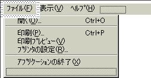
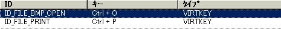
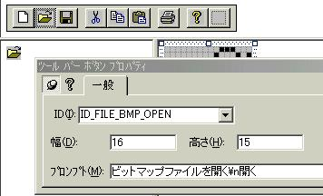
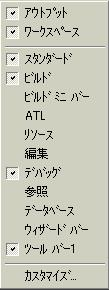
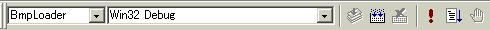

いよいよ最終章です。最後にソフトウェアのちょっとしたことと、リリースビルドについて説明して終わりにしたいと思います。
| 12.アクセラレータキーの再設定 |
アクセラレータキーをご存知でしょうか？アクセラレータキーとは「Ctrl＋*」で行われるショートカットキーのことで、エディタのUndoは「Ctrl+Z」で行われます(詳しくはプログラミング辞典を参照ください)。今回作成したソフトウェアでも
「Ctrl+O」で[ファイル]-[開く]
「Ctrl+P」で[ファイル]-[印刷]
のメニューが実行されるようになっています。でここで「Ctrl＋O」を実行し、ビットマップファイルを開いてみてください。 多分変なエラーメッセージダイアログが出力されて、強制終了が起きるでしょう。もう1回メニューリソースを開いて見ると、確かにCtrl＋Oでビットマップファイルが開くように記述してあるんですがね…。どうしてでしょう。
| Fig5_1.jpg メニューリソースはこのように編集してあったはずですが・・・ |
|  |
なんて、もうだいぶプログラミング経験が豊富になってきた皆さんには分かりますよね。この「Ctrl+O」は、単なるキャプションなので、ここに書いても、このメニューが動作するかはわかりません。問題はCtrl+Oが押された時にどのようなメッセージIDが起動するかです。
そのことが記述されているのは、リソースの中のAcceleratorです。
開いてみると分かりますが、IDやらキーやらタイプやらという項目の下に、十数個の内容が並んでいますが注目すべきところは、キーが「Ctrl+O」のIDがID_FILE_OPENになっていることです。私たちはビットマップファイルを開くために、新しくID_FILE_BMP_OPENというIDを作りました。したがって「Ctrl＋O」が押されたときにID_FILE_BMP_OPENが起動するように変更すると共に、そしてあんまり意味の無いアクセラレータキーを削除します。アクセラレータキーの編集の仕方は各自体験してみてください(簡単なので)。こんな感じに仕上げてみてください。
| Fig5_2.jpg アクセラレータキーの設定 |
|  |
これで実行！と言いたいところなんですが、ID_FILE_OPENからID_FILE_BMP_OPENに変えた後遺症(笑)があるんです。分かりますか？ツールバーの「開く」もまだID_FILE_OPENが割り当てられているので、これも変更しなくてはならないのです。リソースのToolBarを開き、「開く」マークをダブルクリックします。するとプロパティダイアログが開くので次のように変更します。(IDだけ変更すれば幅や高さやプロンプトは自動的に挿入されます)
| Fig5_3.jpg ツールバーボタンの設定 |
|  |
さていよいよ実行です。アクセラレータキーが正しく動作していればOKです。
| 13.リリースビルド |
リリースビルドとデバッグビルドが簡単に使い分けられる環境を作ってしまいましょう。VisualStdioの中のツールバー群のあたりで右クリックするとこんなメニューが出てくるはずです。
| Fig5_4.jpg ツールバー右クリックメニューを開くと |
|  |
このメニューの中で「ビルド」を選択します(上の例ではビルドが選択されていますが、選択されていたら何もしなくても結構です)。ビルドが選択されているときは、以下のようなツールバーが開くはずです。
| Fig5_5.jpg ビルドツールバー |
|  |
この真ん中のWin32 Debugの部分がビルド方式です。したがってここをWin32 Releaseにするとリリースビルドできるようになります。さて皆さんもリリースビルドをしてみてください。
作成したソフトウェアのソースファイル
[Next]
[Previous]
[Home]